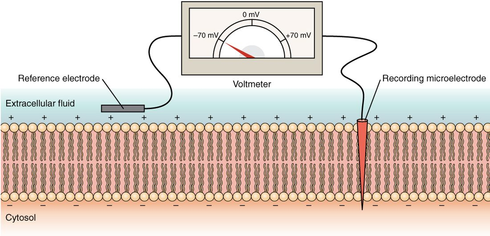

The resting membrane potential
1Why this matters
Mr. Okafor, 62, has kidney failure and missed two treatments that clear waste from his blood. He arrives feeling weak, with a slow, irregular pulse. His blood potassium is 7.1 mmol/L (normal 3.5–5.0). Nothing is wrong with his heart muscle itself. The extra potassium outside his cells has shifted the voltage across every cell membrane, and his heart cells are the most sensitive to that shift.
2What this builds on
3Quick check before you start
1. Where is potassium more concentrated at rest?
- Inside the cell
- Outside the cell
- Equal on both sides
Show the answer
Potassium is about 140 mmol/L inside and about 4 mmol/L outside. Sodium is the reverse: high outside, low inside.
- Correct: Inside the cell:
- Outside the cell:
- Equal on both sides:
2. In one cycle, what does the sodium–potassium pump move?
- 3 Na+ out and 2 K+ in
- 2 Na+ out and 3 K+ in
- 3 K+ out and 2 Na+ in
Show the answer
Using one ATP, the pump moves 3 sodium ions out of the cell and 2 potassium ions in, each against its concentration gradient.
- Correct: 3 Na+ out and 2 K+ in:
- 2 Na+ out and 3 K+ in:
- 3 K+ out and 2 Na+ in:
3. What does a voltage measure?
- The difference in electrical potential between two points
- The number of ions in a solution
- The speed at which ions move
Show the answer
Voltage is a potential difference: how strongly separated charges push charge from one point toward another. It is measured in volts or, across membranes, millivolts.
- Correct: The difference in electrical potential between two points:
- The number of ions in a solution:
- The speed at which ions move:
4Anatomy

With labels hidden, select a box to reveal its label.
5How it works, step by step
- The sodium–potassium pump uses ATP to move 3 Na+ out and 2 K+ in, over and over.Potassium is concentrated inside the cell (about 140 mmol/L) and sodium outside (about 145 mmol/L).
- At rest, many potassium leak channels are open and few channels pass sodium.Potassium diffuses out of the cell, down its concentration gradient.
- Each K+ that leaves carries a positive charge out, and the negatively charged proteins it balanced cannot follow.The inside of the membrane becomes negative compared with the outside.
- The growing negative charge inside pulls K+ back toward the cell.Potassium outflow slows as the voltage approaches potassium's equilibrium potential, about −90 mV.
- A small leak of sodium into the cell adds positive charge.The voltage settles at about −70 mV, the resting membrane potential, and the pump keeps replacing the leaked ions so it stays there.
6Core concepts
7A common mistake
The wrong idea: The sodium–potassium pump creates the resting potential by pushing out more positive charge than it brings in.
What actually happens: The pump does move 3 positive charges out for every 2 in, but that direct effect is only a few millivolts. Most of the −70 mV comes from potassium diffusing out through leak channels and leaving negative charge behind. The pump's main job is slower: it keeps the potassium and sodium gradients from running down. Block the pump and the voltage changes only a little at first, then fades over minutes to hours as the gradients disappear.
8Check yourself
Anything you miss goes into your review queue.
1. An experimental cell has a membrane that lets potassium through and no other ion. It starts with 140 mmol/L K+ inside and 4 mmol/L outside. Where does its membrane potential settle?
- At 0 mV
- At about −70 mV, the typical resting value
- At about +60 mV
- At about −90 mV
Show the answer
With only potassium able to cross, potassium leaves until the electrical pull inward balances its concentration push outward. That balance point is potassium's equilibrium potential, about −90 mV with these concentrations.
- At 0 mV: Potassium still leaks out and leaves negative charge behind, so a voltage builds. A membrane passing only potassium settles at potassium's equilibrium potential, not at zero.
- At about −70 mV, the typical resting value: Real cells rest near −70 mV because a small sodium leak pulls them up from potassium's value. With no sodium leak, nothing pulls the voltage away from −90 mV.
- At about +60 mV: About +60 mV is sodium's equilibrium potential. It would apply to a membrane that passed only sodium.
- Correct: At about −90 mV: Correct. A membrane permeable only to potassium reaches potassium's equilibrium potential, about −90 mV.
2. Mr. Okafor, 62, with kidney failure, has a blood potassium of 7.1 mmol/L (normal 3.5–5.0). What happens to the resting membrane potential of his heart muscle cells?
- It becomes more negative (hyperpolarized)
- It does not change
- It becomes less negative (depolarized)
- It becomes positive
Show the answer
Raising outside potassium shrinks the potassium concentration gradient. Less potassium needs to leave before the electrical pull balances it, so potassium's equilibrium potential moves toward zero, and the resting potential follows. The cells are depolarized.
- It becomes more negative (hyperpolarized): The voltage comes from potassium leaving the cell, not from potassium sitting outside. A smaller gradient means less leaves, so the inside becomes less negative, not more.
- It does not change: The inside concentration barely changes, but the gradient depends on both sides. Outside potassium rising from about 4 to 7 mmol/L is a large relative change and shrinks the gradient.
- Correct: It becomes less negative (depolarized): Correct. Hyperkalemia depolarizes resting cells by shrinking the potassium gradient that drives the leak.
- It becomes positive: Potassium still dominates at rest, and its equilibrium potential with 7 mmol/L outside is still well below zero (around −80 mV). The cell depolarizes but stays negative.
3. A neuron's membrane potential moves from −70 mV to −60 mV. The inside is still negative. What is this change called?
- Hyperpolarization
- Repolarization
- Depolarization
- Reversal of polarity
Show the answer
Depolarization is any change that makes the potential less negative than rest. It does not have to reach zero or become positive.
- Hyperpolarization: Hyperpolarization is a change to more negative than rest, such as −70 to −80 mV.
- Repolarization: Repolarization is a return toward rest after a depolarization. This change moves away from rest.
- Correct: Depolarization: Correct. Moving from −70 to −60 mV is a depolarization, even though the inside stays negative.
- Reversal of polarity: Reversal of polarity would mean the inside became positive. Here it is still negative; it has only moved toward zero, which is a depolarization.
4. Level 1. Extracellular potassium around a neuron rises from 4 to 8 mmol/L. Nothing else changes. Predict each variable.
| Variable | Change |
|---|---|
| Potassium concentration gradient across the membrane | — |
| How negative potassium's equilibrium potential is | — |
| How negative the resting membrane potential is | — |
| Potassium concentration inside the cell | — |
Show the answer
Raising outside potassium shrinks the potassium gradient, which makes potassium's equilibrium potential and the resting potential less negative, while inside concentration barely changes.
- Potassium concentration gradient across the membrane: down. Outside potassium rises while inside stays near 140 mmol/L, so the difference between the two sides shrinks.
- How negative potassium's equilibrium potential is: down. A smaller gradient is balanced by a smaller electrical pull, so potassium's equilibrium potential moves from about −95 toward −76 mV.
- How negative the resting membrane potential is: down. Rest sits near potassium's equilibrium potential, so it follows it toward zero: the cell depolarizes.
- Potassium concentration inside the cell: no change. Only a tiny number of ions move to change the voltage, so the inside concentration stays near 140 mmol/L.
5. Put the events that set up the resting membrane potential in order.
- The pump builds high potassium inside and high sodium outside
- Potassium diffuses out through open leak channels
- Negative proteins left behind make the inside negative
- The negative inside pulls potassium back, slowing its exit
- A small sodium leak settles the voltage near −70 mV
Show the answer
The gradients come first. Potassium then leaks out, leaving negative charge behind. That charge opposes further exit until the voltage nears −90 mV, and a small sodium leak pulls it up to about −70 mV.
- Correct order: 1. The pump builds high potassium inside and high sodium outside 2. Potassium diffuses out through open leak channels 3. Negative proteins left behind make the inside negative 4. The negative inside pulls potassium back, slowing its exit 5. A small sodium leak settles the voltage near −70 mV
6. A resting cell suddenly opens so many sodium channels that it passes sodium far more easily than potassium. Where does its membrane potential head?
- Toward −90 mV
- Toward +60 mV
- Toward 0 mV and stops there
- It stays at −70 mV
Show the answer
The membrane potential moves toward the equilibrium potential of the ion the membrane passes most easily. With sodium dominating, the voltage heads toward sodium's equilibrium potential, about +60 mV.
- Toward −90 mV: About −90 mV is potassium's equilibrium potential. It applies when potassium dominates.
- Correct: Toward +60 mV: Correct. Sodium flows in, carrying positive charge, and the inside heads toward sodium's +60 mV.
- Toward 0 mV and stops there: Zero has no special pull. Sodium keeps flowing in past zero because its concentration gradient still pushes it inward.
- It stays at −70 mV: The resting value depends on which channels are open. Changing the dominant ion changes the voltage.
9Summary
The membrane potential is the voltage across the plasma membrane, read inside compared with outside. At rest it is about −70 mV in a neuron. Potassium leaks out through open channels and leaves negative charge behind; the voltage settles near potassium's equilibrium potential (about −90 mV), pulled a little toward sodium's (+60 mV) by a small sodium leak. Only a tiny number of ions move. The pump's direct effect is a few millivolts; its main role is keeping the gradients steady. Less negative than rest is depolarization, back toward rest is repolarization, and more negative is hyperpolarization. High blood potassium depolarizes the resting potential; low blood potassium hyperpolarizes it.